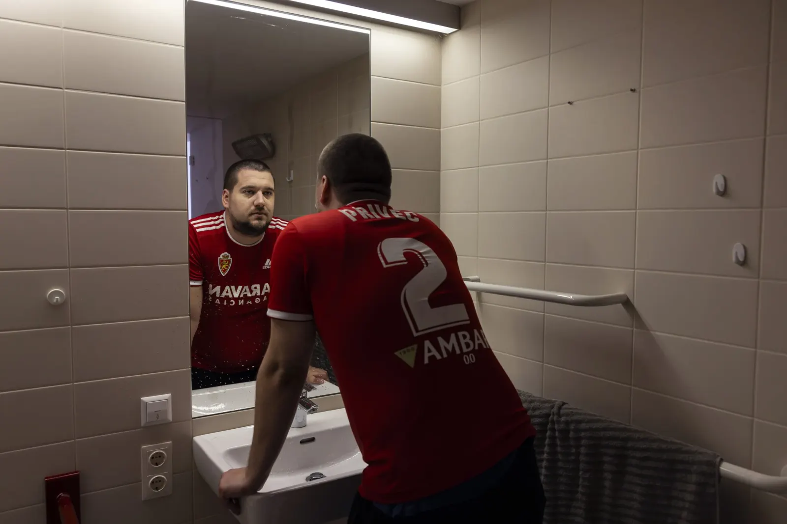

Martin
Privec

Martin comes from Upper Austria. Before he fell ill, he played football whenever he could.
In 2017 he fell ill after glandular fever, an Epstein-Barr infection. Ten months later he was almost entirely bedbound, and stayed so for four years. Doctors did not believe him; some thought it was psychological. He lived in supported housing with care around the clock.
Low doses of two drugs, aripiprazole and naltrexone, helped him markedly. Today he plays basketball for a few minutes, drives, is moving into his own flat and looking for a part-time job. Long walks and real sport are still out of reach.
I always hoped there was still a medicine I hadn’t tried.
Martin Privec